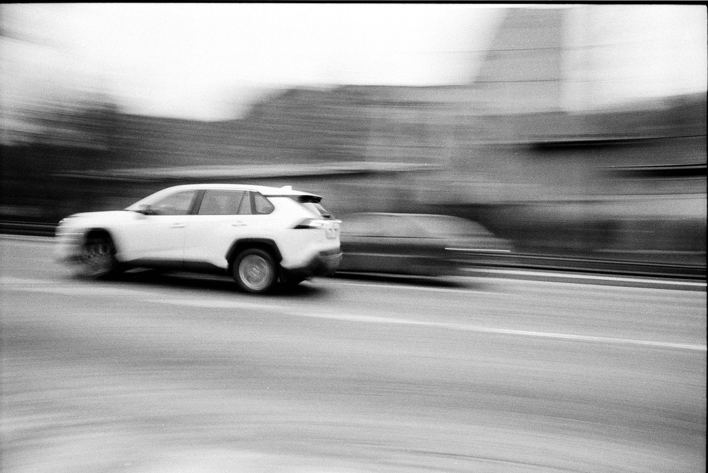

Home / Diagnostics
Squealing Noise When Starting a Cold Car: Belt or Something Else?
Quick answer
A short squeal for the first few seconds on a cold morning is most often a drive belt that is worn, glazed, contaminated or running with too little tension. Look at the belt for cracks and shiny edges, check the tensioner and pulleys, and fix it soon. A belt that snaps can stop the alternator and water pump, so don't leave it for months.

What causes a squeal on a cold start?
The drive belt (also called the serpentine or accessory belt) turns the alternator, power steering pump, air conditioning compressor and often the water pump. Rubber is stiffest when it's cold, and any moisture or contamination on it reduces grip. If the belt slips on a pulley for a moment, you hear a sharp squeal that usually fades as the engine warms up.
Worn or glazed belt
Old belts harden, crack and develop a shiny, glazed surface that grips poorly. Ribs that look cracked across, frayed edges or missing chunks mean it's time for a new one.
Weak tensioner
An automatic tensioner keeps the belt tight. When its spring weakens or the damper wears, the belt slips, especially when cold or when the alternator is loaded.
Worn pulleys and bearings
A failing idler pulley, tensioner pulley or alternator bearing can squeal, chirp or growl. Misaligned or damaged pulleys also wear belts quickly.
Oil or coolant contamination
A leaking valve cover gasket, crankshaft seal or water pump can drip onto the belt and make it slip. Fix the leak, not just the belt.
Belt or something else?
- Squeal for a few seconds, then gone: usually belt or tensioner.
- Squeal when turning the steering wheel to full lock: belt slipping under power steering load.
- Squeal when the air conditioning switches on: belt tension or a tiring compressor.
- Constant chirp that follows engine speed: often a misaligned or dry pulley bearing.
- Grinding or rumbling: bearing failure in a pulley, alternator or water pump.
- Squeal plus battery light: belt slipping or off. See Battery Light On While Driving.
How to inspect the belt safely
- Switch the engine off, remove the key and let it cool. Never put hands near a running belt.
- Use a torch to look along the belt. Check for cracks, fraying, glazing, oil or missing ribs.
- Press the belt midway between pulleys. Too much give suggests low tension, but follow your manual, as many cars use an automatic tensioner.
- Spin each pulley by hand where reachable. It should turn smoothly and quietly with no wobble.
- Look around the belt for oil or coolant leaks.
Safety note. Don't spray water or belt dressing on a running engine to "test" the noise. Keep hands, hair and loose clothing away from moving parts, and disconnect the battery before working near the belt.
How to fix a squealing belt
- Replace a worn belt. It's a relatively cheap part. Fit the correct length and rib count for your engine.
- Replace the tensioner and idlers if they feel rough or show wear. Many people do the belt and tensioner together.
- Fix leaks first. A new belt will be ruined by oil or coolant.
- Avoid belt dressing sprays. They quiet the noise for a short time and hide the real problem.
Take a photo of the belt routing before removing it, or check the diagram under the hood. For a broader approach to symptoms, see Check Engine Light: Flashing vs Steady and the checklist on our guides page.
How often should a drive belt be replaced?
Modern EPDM belts often last a long time, but intervals vary widely by engine. Check your service schedule, inspect the belt at every oil change (see Oil Filter: How Often to Change It) and replace it if it shows cracks, glazing or noise. If your car is old, a belt of unknown age is worth changing anyway.
FAQ
Is a squealing belt dangerous?
Not instantly, but a belt that fails can stop the alternator, power steering and sometimes the water pump, which can cause overheating. Get it checked soon.
Why does my car only squeal when cold?
Cold rubber is stiffer and damp pulleys reduce grip. A belt or tensioner that is near the end of its life often shows up first on cold mornings.
Can I drive with a squealing belt?
For a short trip to a workshop, usually yes. Stop if the battery light comes on, the engine temperature climbs or the steering gets heavy.
Does belt dressing fix a squeal?
No. It may quiet the noise briefly but hides the cause and can attract dirt.
This guide is general information, not professional advice. Check your own vehicle's manual for exact specs and read the disclaimer before starting any job.